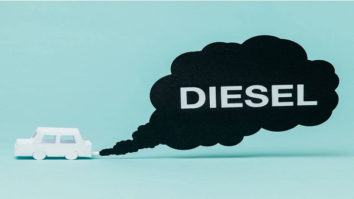

FRANCIA LES DIRÁ ADIÓS A LOS VEHÍCULOS DE DIÉSEL Y GASOLINA… EN 2040

Pensar que un automóvil eléctrico sea nuestro medio de transporte no es nada nuevo. Recientemente se han visto diferentes avances en este mercado, el cual demuestra que sí se puede ser ecológico sin necesidad de abordar el transporte público o movernos en bicicleta. Y eso lo ha entendido el gobierno francés de la mano de su ministro de medio ambiente, Nicolas Hulot, quien fue el encargado de dar la noticia que sin duda pondrá a pensar a más de un gobernante.
De acuerdo con el medio Electreck, Noruega tiene la intención de generar la reducción en la compra de estos vehículos a 2025, por lo que el objetivo de Francia se vería tardío. Pero acá es importante resaltar que, contrario al caso de Francia, Noruega solo quiere incentivar el desuso, mientras que el país galo lo prohibirá del todo.
Ahora, que estemos a 23 años de su total aplicación no quiere decir que los cambios no vayan a verse desde ya. Según Hulot, el periodo de eliminación gradual de estos vehículos comenzó desde ya. Por eso, para incentivar el cambio de vehículo, el gobierno francés está ofreciendo incentivos para que las familias obtengan un vehículo eléctrico. Además, ya existen programas para realizar los cambios, pero por ahora no se conocen detalles precisos.
Francia y el mercado de vehículos
Una de las empresas que ha comenzado a introducir vehículos ecológicos es Volvo. Aunque no están dejando de lado sus vehículos convencionales, sí cuenta con autos eléctricos, híbridos y con baterías. Estos vehículos estarán disponibles en el mercado desde 2019.
De acuerdo con el informe de Bloomberg Energy Finance, se espera que el 35 por ciento de las ventas globales de vehículos nuevos serán eléctricos en 2040. Por su parte, el análisis de Morgan Stanley asegura que la cifra será del 50 por ciento de vehículos nuevos vendidos para ese año. Finalmente, las compañías deberán estudiar el posible incremento de las baterías debido al incremento en la demanda que tendrá debido a la popularidad de los vehículos eléctricos.